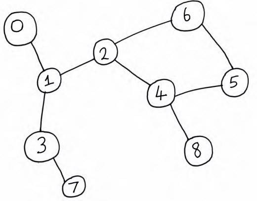

Breadth-first search
Motivation
Breadth-first search, commonly abbreviated to "BFS", is a graph-search algorithm which, like DFS, systematically traverses the nodes and edges in a graph. If we have DFS, why another algorithm? Well, unlike DFS, BFS is actually useful on its own.
If you run BFS on an unweighted, undirected graph (here, "unweighted" means that the edges do not have associated weights), you can use it to find the shortest path between the start node and all other nodes that are reachable from the start node.
Amongst other applications, BFS is also used:
- For garbage collection. For example, see Cheney's garbage collection algorithm.
- To construct a variety of other graph-related algorithms, such as testing graph bipartiteness.
The main idea
A key difference between DFS and BFS is that, while DFS uses a stack to keep track of nodes, BFS uses a queue. This enables BFS to completely visit each of the immediate neighbours of a node before continuing to search the rest of the graph. DFS, on the other hand, searches as deep as possible before backtracking and visiting other neighbours of a given node.
As with DFS, an example will help to illustrate the point.
We'll run BFS on the undirected graph above, starting at the node labelled 0.
- Node 0 has a single unvisited neighbour, 1. So the algorithm enqueues node 1.
- Node 1 is dequeued. It has two unvisited neighbours, 2 and 3. Suppose the algorithm explores 2 first. So it enqueues 2 and then enqueues 3.
- Node 2 is dequeued. It has two unvisited neighbours, 4 and 6. Suppose 4 is explored first. Then the algorithm enqueues 4 and then enqueues 6.
- Node 3 is dequeued. It has one unvisited neighbour, node 7. The algorithm enqueues 7.
- Node 4 is dequeued. It has two unvisited neighbours, 5 and 8. Suppose 5 is explored first. Then the algorithm enqueues 5 and then enqueues 8.
- Node 6 is dequeued. It has no unvisited neighbours, since both its neighbours, 2 and 5, were marked as visited when they were enqueued.
- Node 7 is dequeued. It has no unvisited neighbours.
- Node 5 is dequeued. It also has no unvisited neighbours.
- Node 8 is dequeued and it also has no unvisited neighbours.
- The algorithm terminates since the queue is empty.
So the order in which nodes were visited (dequeued) is: 0, 1, 2, 3, 4, 6, 7, 5, 8.
BFS code
Now let's look at some code.
We use the same helper Edge class that we used for DFS.
import java.util.Queue;
import java.util.LinkedList;
import java.util.List;
public class BFS {
private static class Edge {
private int fromNode, toNode;
public Edge(int fromNode, int toNode) {
this.fromNode = fromNode;
this.toNode = toNode;
}
}
}Next up is the actual BFS algorithm. It takes in the graph and start node as parameters.
public void bfs(List<List<Edge>> graph, int start) {
Queue queue = new LinkedList<>();
queue.offer(start);
boolean[] visited = new boolean[graph.size()];
visited[start] = true;
while (!queue.isEmpty()) {
int node = queue.poll();
for (Edge edge : graph.get(node)) {
if (!visited[edge.toNode]) {
queue.offer(edge.toNode);
visited[edge.toNode] = true;
}
}
}
} Complexity analysis
What's the time complexity of BFS? Assuming that the first four lines of the algorithm take
constant time, the real work happens inside the while loop. As
with DFS, we see that each node gets enqueued and dequeued exactly once. In the worst case, each
node in the graph is reachable from the start node. So the poll
operation occurs exactly times, where is the number
of nodes in the graph.
Also, the body of the for loop
is executed exactly times, where
is the number of edges in the graph.
So we poll a node exactly times and we execute the for
loop
body times. In total, we have a running time of
.
Since we've used an adjacency list to represent the graph, the space complexity is also , like for our DFS implementation.
Key takeaways
BFS is a useful graph-search algorithm that can be used to find the shortest path between two nodes in an unweighted, undirected graph. It also has a variety of other applications directly or indirectly related to graph theory. It runs in linear time with respect to the number of vertices and edges in the graph: .
One limitation of BFS is that it's not very useful for finding the shortest path in graphs with weighted edges. The next algorithm solves that issue for certain types of graphs.